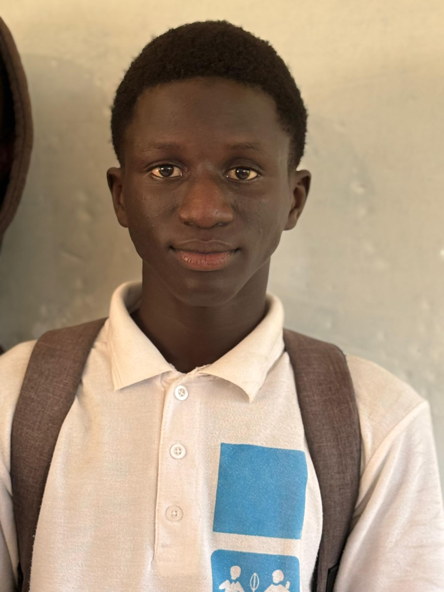
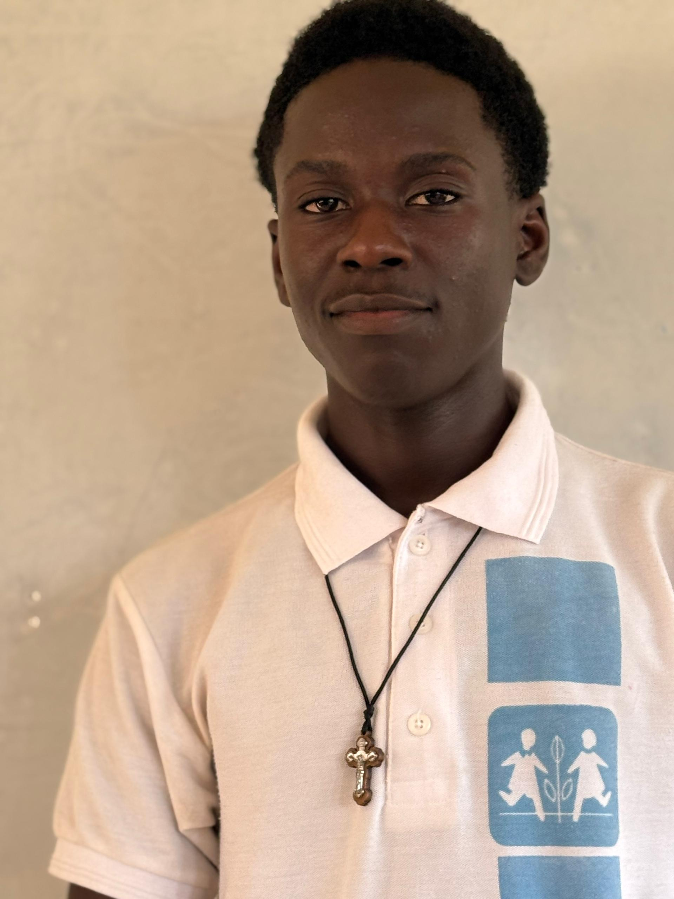

Sobre Nós
Projeto de final de curso desenvolvido por alunos do Liceu Politécnico SOS da Guiné-Bissau
Nosso Projeto
O MyJob é um projeto de final de curso desenvolvido por alunos do Liceu Politécnico SOS da Guiné-Bissau. Nossa plataforma foi criada com o objetivo de conectar candidatos a oportunidades de emprego em Guiné-Bissau, facilitando o processo de recrutamento e seleção para empresas locais e internacionais que atuam no país.
Identificamos que o mercado de trabalho em Guiné-Bissau enfrenta desafios significativos na conexão entre talentos e empregadores. Muitas vezes, as empresas têm dificuldade em encontrar profissionais qualificados, enquanto candidatos talentosos não conseguem descobrir oportunidades adequadas às suas habilidades. O MyJob surge como uma solução tecnológica para esse problema, criando uma ponte digital entre candidatos e empregadores.
Nossa plataforma oferece:
- Um ambiente intuitivo para candidatos buscarem vagas de emprego
- Ferramentas para empresas publicarem e gerenciarem suas vagas
- Sistema de candidaturas simplificado
- Perfis detalhados para candidatos e empresas
- Recursos de busca avançada e filtros personalizados
Este projeto representa não apenas nossa formação acadêmica, mas também nosso compromisso com o desenvolvimento socioeconômico de Guiné-Bissau, contribuindo para a modernização do mercado de trabalho local através da tecnologia.
Nossa Equipe
Somos um grupo de estudantes finalistas do Liceu Politécnico SOS da Guiné-Bissau, apaixonados por tecnologia e comprometidos com o desenvolvimento do nosso país. Cada membro da equipe contribuiu com suas habilidades e conhecimentos para tornar este projeto uma realidade.

Erbio Da Costa
Aluno do 12º ano - Curso de TIC
Responsável pelo desenvolvimento frontend e design da interface do usuário, garantindo uma experiência intuitiva e responsiva.

Carlos Rafael Namfantche
Aluno do 12º ano - Curso de TIC
Responsável pelo desenvolvimento backend e integração com banco de dados, assegurando o funcionamento eficiente do sistema.
Nossa Escola
Liceu Politécnico SOS da Guiné-Bissau
O Liceu Politécnico SOS é uma instituição de ensino de referência em Guiné-Bissau, dedicada à formação técnica e profissional de jovens guineenses. Fundado com o apoio da organização SOS Aldeias Infantis, o liceu tem como missão proporcionar educação de qualidade e preparar os estudantes para os desafios do mercado de trabalho.
A instituição oferece diversos cursos técnicos e profissionalizantes, com foco em áreas estratégicas para o desenvolvimento do país, como tecnologia da informação, administração, contabilidade e engenharia. O Liceu Politécnico SOS destaca-se pela qualidade do ensino, infraestrutura moderna e corpo docente qualificado.
Este projeto de final de curso representa o culminar da nossa formação nesta prestigiada instituição, aplicando os conhecimentos adquiridos ao longo dos anos para desenvolver uma solução tecnológica com impacto real na sociedade guineense.
Agradecimentos
Gostaríamos de expressar nossa sincera gratidão a todos que contribuíram para a realização deste projeto:
- À direção do Liceu Politécnico SOS da Guiné-Bissau, pelo apoio institucional e infraestrutura disponibilizada
- Aos nossos professores e orientadores, pela dedicação, conhecimento compartilhado e orientação ao longo do desenvolvimento do projeto
- Às empresas e profissionais que participaram das entrevistas e pesquisas, fornecendo insights valiosos sobre as necessidades do mercado de trabalho local
- Às nossas famílias, pelo apoio incondicional e compreensão durante os momentos de dedicação intensa ao projeto
- Aos colegas de curso, pela colaboração, troca de experiências e ambiente de aprendizado colaborativo
Este projeto não seria possível sem o apoio e contribuição de cada uma dessas pessoas e instituições. Nosso muito obrigado!
Entre em Contato
Se você tiver dúvidas, sugestões ou quiser saber mais sobre o projeto MyJob, entre em contato conosco: